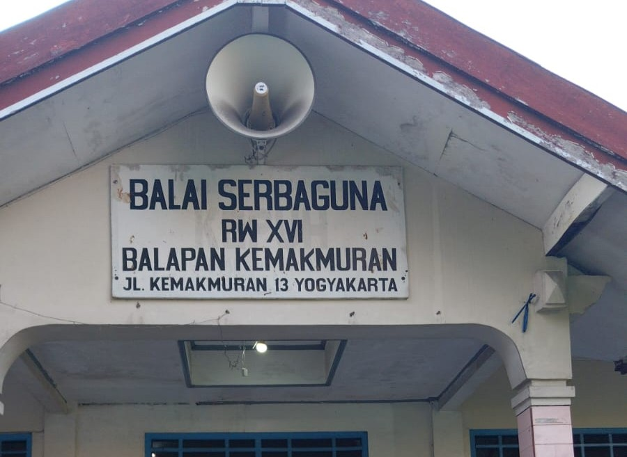
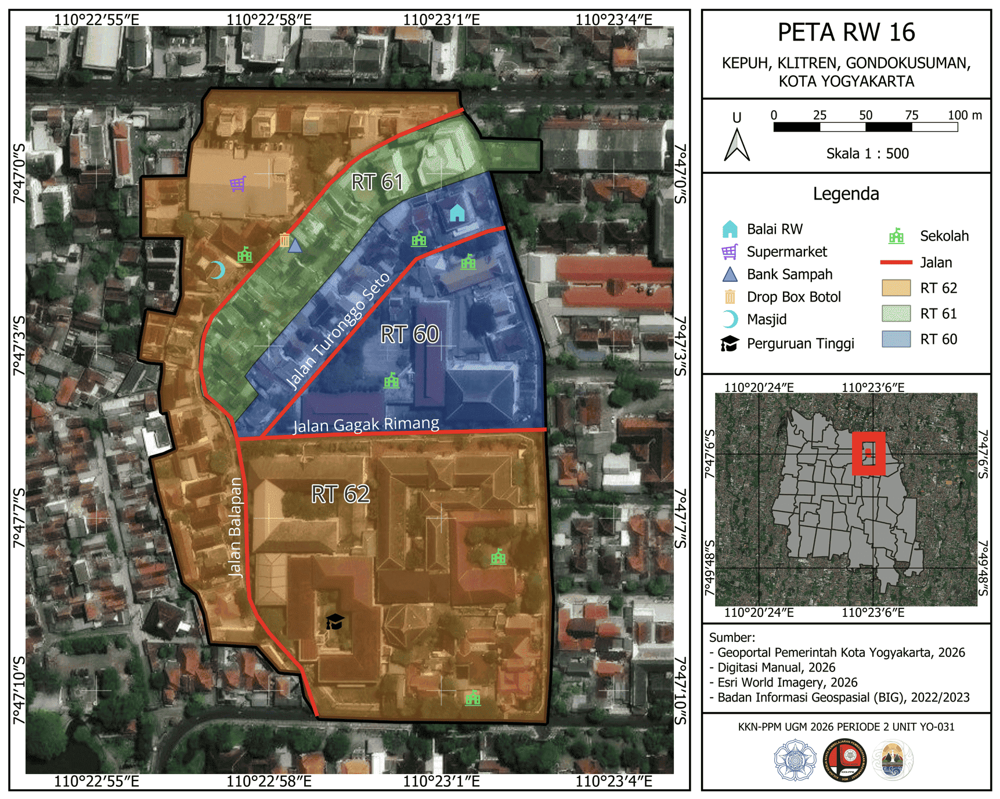

RW 16 Klitren
Temukan informasi wilayah, RT, kegiatan warga, dan peta RW 16.

RT di RW 16
Informasi pembagian wilayah RT yang berada di lingkungan RW 16 Klitren.

RT 60
RT 61
RT 62
Kegiatan Warga RW 16
Berbagai kegiatan dan kelompok yang tumbuh serta berkembang bersama warga RW 16.
Peta Wilayah RW 16
Peta administratif RW 16, Kelurahan Klitren.